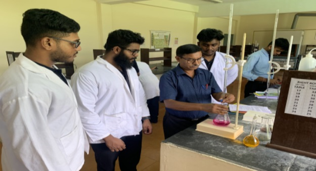

Chemistry
Chemistry is vastly applied in electrical engineering. Because there is all discussion about the transistor, resistor, capacitor, inductor, and also semi-conductors. The current passing through these items is due to the movement of electrons. Electron and its properties are also chemistry sub-field. Electrical engineers must have this knowledge to make an electrical circuit.
There are chemical liquids used in batteries to produce current. Nickel-cadmium and lead-acid batteries. When electrical engineers study the formation of batteries, they must know the reactions of elements present in the chemicals of batteries. Semiconductors like silicon, germanium, and indium are also used in many reactions.
| Sl No. | Name | Contact Number |
|---|---|---|
| 1 | Dr.Susanta Saha | +91 943 468 5675 |
| 2 | Mr.Rabindranath Singha | +91 897 225 3384 |
Chemistry Labortary

The main objective of Chemistry Laboratory is to furnish the conceptual understanding of the basic principles involved in chemical analysis. Most of the experiments are correlated to the theoretical concepts. This course lays the foundation of certain basic concepts and skills that can be repeatedly employed by the students in their future endeavors. This course also helps to improve the scientific temper of the students to conduct the various experiments.